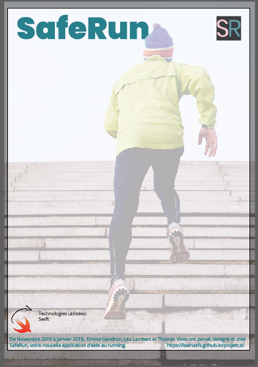
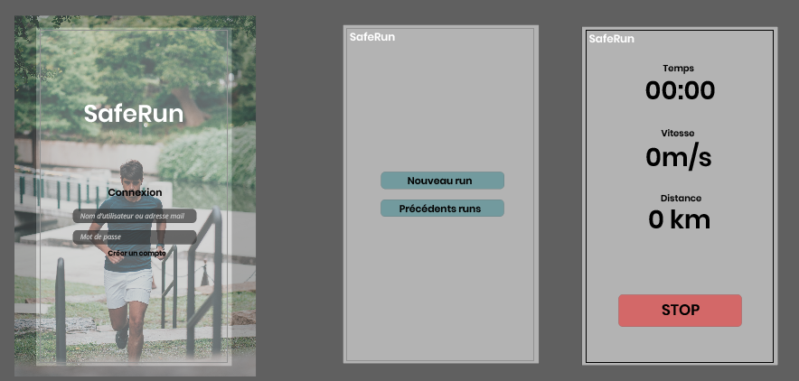
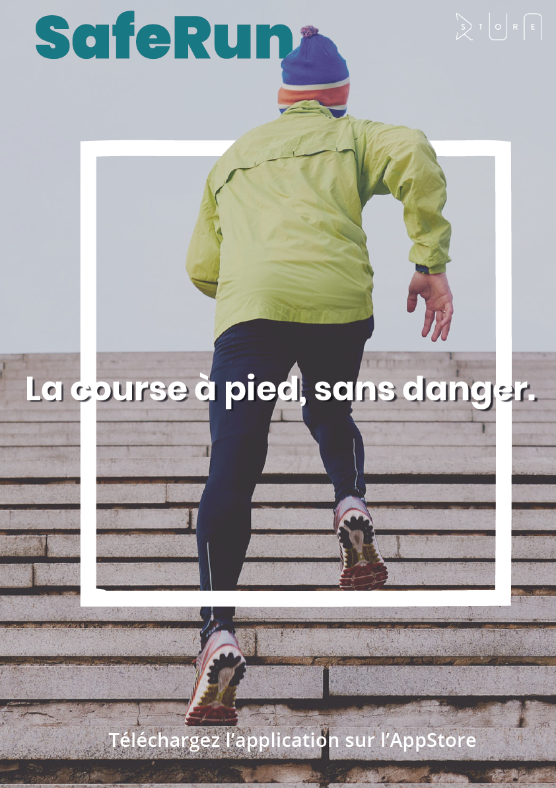

Notre projet.
SafeRun est une application développée pour les joggeurs leur permettant d'envoyer un appel aux secours en cas d'arrêt soudain, de problème cardiaque ou encore d'évanouissement.
En savoir plus
Quelques mots-clés.
Jogging, Running, Entrainement, Course, Santé, Secours, Sport
Partenaires envisagés.
Nous avions comme idée de créer un partenariat avec différents magasins de running locaux, comme :
Mais également viser un média différent en envisageant un partenariat avec le marathon de Bordeaux
Compétences visées sur votre cv / pers.
Nous souhaitons dans un premier temps développer plusieurs qualités qui nous semblent indispensables à avoir dans la vie professionnelle, que nous pourrions ainsi valoriser sur notre CV.
Il s'agit ici de l'auto-organisation, du développement web et développement mobile, du travail de groupe, du partage des tâches, de la rigueur, de l'écoute et de l'adaptation.
Critères de réussite du projet (Version 0 les choses indispensables, V1, V2…)
V0 du projet
Une application de running qui retrace le parcours du coureur grâce à la géolocalisation de son smartphone. Lorsque l'application détecte que le coureur n'est plus en mouvement, celle-ci lui demandera de justifier son arrêt. Plusieurs possibilités s'offrent à lui:
- Le coureur fait une pause, et l'indique alors, signalant que tout va bien.
- Le coureur n'est pas en mesure de justifier son arrêt. Un message d'alerte apparait à l'écran et un bip retentit.
- Si le coureur n'est pas en mesure d'arrêter le bip, au bout de 20 secondes un appel est lancé aux urgences.
V1 du projet
En plus des fonctions de la V0, le coureur peut suivre son parcours en temps réel, et voir à la fin de son run sa vitesse moyenne, sa vitesse minimale et sa vitesse maximale effectuées durant son jogging.
V2 du projet
En plus des fonctionnalités de la V1, le coureur peut bénéficier d’un affichage/rétrospective de ses entraînements sous forme d’agenda et planifier ses prochaines courses.
Avancée du projet : semaine à l'IUT.
Lundi 07 Janvier 2019
- Thomas : Dans le but de faire un développement optimal et des plus propres, je me suis documenté sur la technologie Swift et ses différentes possibilités notamment concernant la position GPS. Suite à cela j'ai commencé à développer l'application en respectant l'ordre de priorité des fonctionnalités.
- Emma : Dans le cadre d’une recherche de partenaires, j’ai commencé par rédiger et envoyer un mail présentant le concept de SafeRun ainsi que la concrétisation du projet par une telle collaboration. J’ai également contribué à la finalisation du parcours utilisateur, pertinent et semblable à celui d’app running courante.
- Léa : J'ai dans un premier temps passé quelques heures sur la recherches de différents tutoriels Swift (comment accéder aux données gps, l'accéléromètre, slapshscreen, changer icone de l'app...). Puis j'ai également aidé Thomas dans le code, surtout lors des bugs. Enfin, j'ai réalié un premier jet du poster premièrement en A3, ainsi qu'un premier jet des maquettes. J'ai également réalisé un premier exemple de SlpashScreen avec Emma.


Mardi 08 Janvier 2019
- Thomas : J'ai continué de développer l'application en suivant l'ordre des priorités, j'ai commencé par faire en sorte d'obtenir les données les plus importantes comme la distance, la vitesse, le temps ainsi que la carte GPS qui nous localise aux bonnes coordonnées. J'ai commencé les recherches concernant le suivi en direct.
- Emma : Un partenaire a répondu à la demande que nous lui avions transmise. J’ai donc pris contact avec le responsable de la structure Run Store qui a accepté de bien vouloir nous soutenir dans ce projet. J'ai aussi installé Xcode sur mon Mac personnel afin de pouvoir continuer le code chez moi. J'ai commencé à refléchir à un nouveau logo. La journée s’est terminée par un travail en groupe sur le code du tracking en temps réel de la course.
- Léa : Aujourd'hui, j'ai continué d'aider Thomas dans le code. J'ai également recherché comment faire des Alertes iOs avec Swift, puis comment faire apparaître une alerte selon une action autres que 'OnClick'. J'ai également modifié le brouillon du poster (passant d'A3 à 2 posters A2). Le poster publicitaire est terminé, il ne manque plus que le poster pédagogique. En fin de journée, j'ai - avec le reste de l'équipe - participé à la recherche des solutions à tous les problèmes que nous rencontrions avec Xcode. J'ai aussi designé le splashscreen final.

Mercredi 09 Janvier 2019
- Thomas : J'ai aidé Emma à régler certains soucis concernant l'application. Ces problèmes étaient en partie dûs à la version de Swift.
- Emma : J'ai pu tester l'application directement sur mon téléphone, et relever quelques problèmes. J'ai pu observer que le tracking fonctionnait, mais avec quelques bugs. J'ai changé quelques éléments graphiques de l'application. J'ai encore changé l'icone de l'application. J'ai aussi téléchargé le QR Code qui relie au site vitrine.
- Léa : J'ai pu continuer à updater le site web de notre projet, et faire l'affiche A3 destinée à l'équipe pédagogique. J'ai également modifié la première affiche pour la rendre plus commerciale.